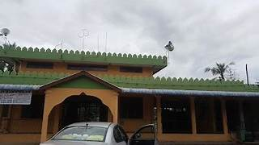
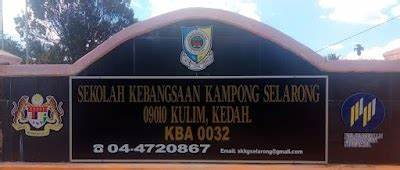
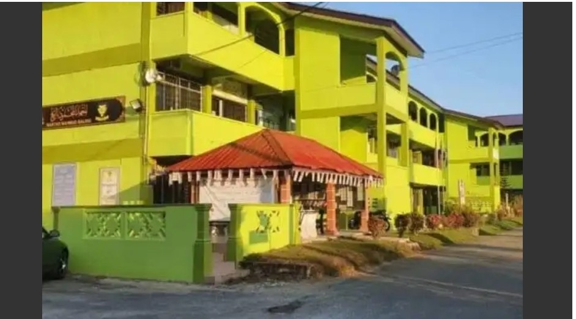

|  | ||
| My kindergarten school | Taska Masjid Al-Halimi Kg Selarong | |
|---|---|---|
| Range of age | From 5-6 years old | |
| List of competition | Nasyid | |
|  | ||
| Primary school | Sk Kg Selarong | |
|---|---|---|
| Range of age | From 7 to 12 years old | |
| List of competition | Being the qariah for a few times , Action songs , Netballers , Dancer of Kadazan dances | |
|  | ||||
| Secondary school | Maktab Mahmud Baling | |||
|---|---|---|---|---|
| Range of age | Form 1 to form 5 | |||
| List of competition | Netballers | |||